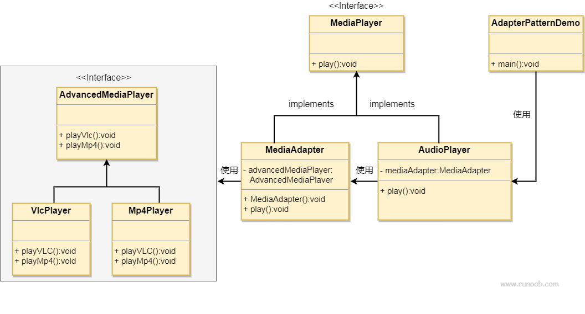

适配器模式
适配器模式（Adapter Pattern）充当两个不兼容接口之间的桥梁，属于结构型设计模式。它通过一个中间件（适配器）将一个类的接口转换成客户期望的另一个接口，使原本不能一起工作的类能够协同工作。
这种模式涉及到一个单一的类，该类负责加入独立的或不兼容的接口功能。举个真实的例子，读卡器是作为内存卡和笔记本之间的适配器。您将内存卡插入读卡器，再将读卡器插入笔记本，这样就可以通过笔记本来读取内存卡。
假设有一个音频播放器，它只能播放 MP3 文件。现在，我们需要播放 VLC 和 MP4 文件，可以通过创建一个适配器来实现：
- 目标接口：定义一个可以播放多种格式文件的音频播放器接口。
- 适配者类：现有的音频播放器，只能播放 MP3 文件。
- 适配器类：创建一个新的类，实现目标接口，并在内部使用适配者类来播放 MP3 文件，同时添加对 VLC 和 MP4 文件的支持。
概述
适配器模式是一种软件设计模式，旨在解决不同接口之间的兼容性问题。
目的：将一个类的接口转换为另一个接口，使得原本不兼容的类可以协同工作。
主要解决的问题：在软件系统中，需要将现有的对象放入新环境，而新环境要求的接口与现有对象不匹配。
使用场景
- 需要使用现有类，但其接口不符合系统需求。
- 希望创建一个可复用的类，与多个不相关的类（包括未来可能引入的类）一起工作，这些类可能没有统一的接口。
- 通过接口转换，将一个类集成到另一个类系中。
实现方式
- 继承或依赖：推荐使用依赖关系，而不是继承，以保持灵活性。
关键代码
适配器通过继承或依赖现有对象，并实现所需的目标接口。
应用实例
- 电压适配器：将 110V 电压转换为 220V，以适配不同国家的电器标准。
- 接口转换：例如，将 Java JDK 1.1 的 Enumeration 接口转换为 1.2 的 Iterator 接口。
- 跨平台运行：在Linux上运行Windows程序。
- 数据库连接：Java 中的 JDBC 通过适配器模式与不同类型的数据库进行交互。
优点
- 促进了类之间的协同工作，即使它们没有直接的关联。
- 提高了类的复用性。
- 增加了类的透明度。
- 提供了良好的灵活性。
缺点
- 过度使用适配器可能导致系统结构混乱，难以理解和维护。
- 在Java中，由于只能继承一个类，因此只能适配一个类，且目标类必须是抽象的。
使用建议
- 适配器模式应谨慎使用，特别是在详细设计阶段，它更多地用于解决现有系统的问题。
- 在考虑修改一个正常运行的系统接口时，适配器模式是一个合适的选择。
通过这种方式，适配器模式可以清晰地表达其核心概念和应用，同时避免了不必要的复杂性。
结构
适配器模式包含以下几个主要角色：
- 目标接口（Target）：定义客户需要的接口。
- 适配者类（Adaptee）：定义一个已经存在的接口，这个接口需要适配。
- 适配器类（Adapter）：实现目标接口，并通过组合或继承的方式调用适配者类中的方法，从而实现目标接口。
实现
我们有一个MediaPlayer接口和一个实现了MediaPlayer接口的实体类AudioPlayer。默认情况下，AudioPlayer可以播放 mp3 格式的音频文件。
我们还有另一个接口AdvancedMediaPlayer和实现了AdvancedMediaPlayer接口的实体类。该类可以播放 vlc 和 mp4 格式的文件。
我们想要让AudioPlayer播放其他格式的音频文件。为了实现这个功能，我们需要创建一个实现了MediaPlayer接口的适配器类MediaAdapter，并使用AdvancedMediaPlayer对象来播放所需的格式。
AudioPlayer使用适配器类MediaAdapter传递所需的音频类型，不需要知道能播放所需格式音频的实际类。AdapterPatternDemo类使用AudioPlayer类来播放各种格式。

步骤 1
为媒体播放器和更高级的媒体播放器创建接口。
MediaPlayer.java
AdvancedMediaPlayer.java
步骤 2
创建实现了AdvancedMediaPlayer接口的实体类。
VlcPlayer.java
Mp4Player.java
步骤 3
创建实现了MediaPlayer接口的适配器类。
MediaAdapter.java
步骤 4
创建实现了MediaPlayer接口的实体类。
AudioPlayer.java
步骤 5
使用 AudioPlayer 来播放不同类型的音频格式。
AdapterPatternDemo.java
步骤 6
执行程序，输出结果：
Playing mp3 file. Name: beyond the horizon.mp3 Playing mp4 file. Name: alone.mp4 Playing vlc file. Name: far far away.vlc Invalid media. avi format not supported其他扩展
comi
153***856@qq.com
分享一个例子：笔记本通过读卡去读取TF卡；
一、先模拟计算机读取SD卡：
1、先创建一个SD卡的接口：
public interface SDCard { //读取SD卡方法 String readSD(); //写入SD卡功能 int writeSD(String msg); }2、创建SD卡接口的实现类，模拟SD卡的功能：
public class SDCardImpl implements SDCard { @Override public String readSD() { String msg = "sdcard read a msg :hello word SD"; return msg; } @Override public int writeSD(String msg) { System.out.println("sd card write msg : " + msg); return 1; } }3、创建计算机接口，计算机提供读取SD卡方法：
public interface Computer { String readSD(SDCard sdCard); }4、创建一个计算机实例，实现计算机接口，并实现其读取SD卡方法：
public class ThinkpadComputer implements Computer { @Override public String readSD(SDCard sdCard) { if(sdCard == null)throw new NullPointerException("sd card null"); return sdCard.readSD(); } }5、这时候就可以模拟计算机读取SD卡功能：
public class ComputerReadDemo { public static void main(String[] args) { Computer computer = new ThinkpadComputer(); SDCard sdCard = new SDCardImpl(); System.out.println(computer.readSD(sdCard)); } }二、接下来在不改变计算机读取SD卡接口的情况下，通过适配器模式读取TF卡：
1、创建TF卡接口：
public interface TFCard { String readTF(); int writeTF(String msg); }2、创建TF卡实例：
public class TFCardImpl implements TFCard { @Override public String readTF() { String msg ="tf card reade msg : hello word tf card"; return msg; } @Override public int writeTF(String msg) { System.out.println("tf card write a msg : " + msg); return 1; } }3、创建SD适配TF （也可以说是SD兼容TF，相当于读卡器）：
实现SDCard接口，并将要适配的对象作为适配器的属性引入。
public class SDAdapterTF implements SDCard { private TFCard tfCard; public SDAdapterTF(TFCard tfCard) { this.tfCard = tfCard; } @Override public String readSD() { System.out.println("adapter read tf card "); return tfCard.readTF(); } @Override public int writeSD(String msg) { System.out.println("adapter write tf card"); return tfCard.writeTF(msg); } }4、通过上面的例子测试计算机通过SD读卡器读取TF卡：
public class ComputerReadDemo { public static void main(String[] args) { Computer computer = new ThinkpadComputer(); SDCard sdCard = new SDCardImpl(); System.out.println(computer.readSD(sdCard)); System.out.println("===================================="); TFCard tfCard = new TFCardImpl(); SDCard tfCardAdapterSD = new SDAdapterTF(tfCard); System.out.println(computer.readSD(tfCardAdapterSD)); } }输出：
在这种模式下，计算机并不需要知道具体是什么卡，只需要负责操作接口即可，具体操作的什么类，由适配器决定。
comi
153***856@qq.com
Lonnie
354***093@qq.com
Swift 实现:
struct VlcPlayer: AdvancedMediaPlayer { func playVlc(fileName: String) { print("Play vlc file. Name:" + fileName) } func playMP4(fileName: String) { } } struct MP4Player: AdvancedMediaPlayer { func playVlc(fileName: String) { } func playMP4(fileName: String) { print("Play mp4 file. Name:" + fileName) } } struct MediaAdapter: MediaPlayer { let advancedMusicPlayer: AdvancedMediaPlayer init(audioType: AudioType) { if audioType == .mp4 { advancedMusicPlayer = MP4Player() } else { advancedMusicPlayer = VlcPlayer() } } func play(_ type: AudioType, fileName: String) { if type == .mp4 { advancedMusicPlayer.playMP4(fileName: fileName) } else { advancedMusicPlayer.playVlc(fileName: fileName) } } } class AudioPlayer: MediaPlayer { var mediaAdapter: MediaAdapter? func play(_ type: AudioType, fileName: String) { if type == .mp3 { print("Play mp3 file. Name:", fileName) } else { mediaAdapter = MediaAdapter(audioType: type) mediaAdapter?.play(type, fileName: fileName) } } func play(_ type: String, fileName: String) { if let type = AudioType(rawValue: type) { play(type, fileName: fileName) } else { print("Invalid media.\(fileName) not supported.") } } } let audioPlayer = AudioPlayer() audioPlayer.play("mp3", fileName: "beyond the horizon.mp3") audioPlayer.play("mp4", fileName: "alone.mp4") audioPlayer.play("vlc", fileName: "far far away.vlc") audioPlayer.play("flac", fileName: "mind me.avi")Lonnie
354***093@qq.com
Siskin.xu
sis***@sohu.com
Python 方式：
#Adapter Pattern with Python Code from abc import abstractmethod,ABCMeta # 为媒体播放器和更高级的媒体播放器创建接口 class MediaPlayer(metaclass=ABCMeta): @abstractmethod def play(self, strAudioType, strFilename): pass class AdvancedMediaPlayer(metaclass=ABCMeta): @abstractmethod def playVlc(self,strFilename): pass @abstractmethod def playMp4(self,strFilename): pass # 实现AdvancedMediaPlayer接口的实体类 class VlcPlayer(AdvancedMediaPlayer): def playVlc(self,strFilename): print("Playing vlc file. Name: "+strFilename) def playMp4(self,strFilename): pass class Mp4Player(AdvancedMediaPlayer): def playVlc(self,strFilename): pass def playMp4(self,strFilename): print("Playing MP4 file. Name: " + strFilename) # 实现MediaPlayer的MediaAdapter实体类 class MediaAdapter(MediaPlayer): advancedMusicPlayer = None def __init__(self,strAudioType): strAudioType = str.lower(strAudioType) if strAudioType == "vlc" : self.advancedMusicPlayer = VlcPlayer() elif strAudioType == "mp4" : self.advancedMusicPlayer = Mp4Player() def play(self,strAudioType,strFilename): if strAudioType == "vlc" : self.advancedMusicPlayer.playVlc(strFilename) elif strAudioType == "mp4" : self.advancedMusicPlayer.playMp4(strFilename) # 实现MediaPlayer的AudiPlayer实体类 class AudioPlayer(MediaPlayer): mediaAdapter = None def play(self,strAudioType,strFilename): strAudioType = str.lower(strAudioType) # 播放MP3音乐文件 if strAudioType == "mp3" : print("Playing mp3 file. Name: "+ strFilename) elif (strAudioType == "vlc") or (strAudioType == "mp4") : self.mediaAdapter = MediaAdapter(strAudioType) self.mediaAdapter.play(strAudioType,strFilename) else : print("Invalid media. "+ strAudioType + " format not supported.") # 调用输出 if __name__ == '__main__': audioPlayer = AudioPlayer() audioPlayer.play("mp3","beyond the horizon.mp3") audioPlayer.play("mp4","alone.mp4") audioPlayer.play("vlc", "far far away.vlc") audioPlayer.play("avi", "mind me.avi")Siskin.xu
sis***@sohu.com
泡水鱼干
626***755@qq.com
PHP 实现:
interface MediaPlayer { public function play(string $audioType, string $fileName); } interface AdvancedMediaPlayer { public function playVlc(string $fileName); public function playMp4(string $fileName); } // 接口实体类 class VlcPlayer implements AdvancedMediaPlayer { public function playVlc(string $fileName) { echo "Playing vlc file. Name: " . $fileName.PHP_EOL; } public function playMp4(string $fileName) { // TODO: Implement playMp4() method. } } // 接口实体类 class Mp4Player implements AdvancedMediaPlayer { public function playVlc(string $fileName) { // TODO: Implement playVlc() method. } public function playMp4(string $fileName) { echo "Playing mp4 file. Name: " . $fileName.PHP_EOL; } } // 适配器类 class MediaAdapter implements MediaPlayer { private $_advancedMediaPlayer; public function __construct(string $audioType) { if ($audioType == "vlc") { $this->_advancedMediaPlayer = new VlcPlayer(); } else if ($audioType == "mp4") { $this->_advancedMediaPlayer = new Mp4Player(); } } public function play(string $audioType, string $fileName) { // TODO: Implement play() method. if ($audioType == 'vlc') { $this->_advancedMediaPlayer->playVlc($fileName); } elseif ($audioType == 'mp4') { $this->_advancedMediaPlayer->playMp4($fileName); } } } class AudioPlayer implements MediaPlayer { private $_mediaAdaper; public function play(string $audioType, string $fileName) { // TODO: Implement play() method. if ($audioType == 'mp3') { echo "Playing mp3 file. name: " . $fileName.PHP_EOL; } elseif ($audioType == 'vlc' || $audioType == 'mp4') { $this->_mediaAdaper = new MediaAdapter($audioType); $this->_mediaAdaper->play($audioType, $fileName); } else { echo "Invalid media. audioType: " . $audioType . " format not supported".PHP_EOL; } } } class Demo { public static function main() { $audioPlayer = new AudioPlayer(); $audioPlayer->play('mp3', 'beyond the horizon.mp3'); $audioPlayer->play("mp4", "alone.mp4"); $audioPlayer->play("vlc", "far far away.vlc"); $audioPlayer->play("avi", "mind me.avi"); } } Demo::main();泡水鱼干
626***755@qq.com
lz
luz***1226@126.com
把 @comi的例子用 C++ 实现了一遍:
// @brief SD卡接口类 class SD { public: virtual string read() = 0; virtual void write(const string&) = 0; }; // @brief SD卡实例 class SDCard : public SD { private: string storage; // SD卡的存储空间 public: SDCard() {} string read() { return storage; } void write(const string& s) { storage = s; } }; // @brief 计算机接口,只能读写SD卡 class Computer { public: virtual void insertSD(const shared_ptr<SD> &) = 0; virtual string readSD() = 0; virtual void writeSD(const string&) = 0; }; // @brief 具体计算机 class HuaWeiComputer : public Computer { private: shared_ptr<SD> sd_slot; // SD卡插槽 public: HuaWeiComputer() {} void insertSD(const shared_ptr<SD>& sd) { sd_slot = sd; } string readSD() { if (sd_slot != nullptr) { return sd_slot->read(); } else { return (string)"[no sd card]"; } } void writeSD(const string& s) { if (sd_slot != nullptr) { sd_slot->write(s); } } }; // @brief TF卡接口类 class TF { public: virtual string read() = 0; virtual void write(const string&) = 0; }; // @brief TF卡实例 class TFCard : public TF { private: string storage; // TF卡的存储空间 public: TFCard() {} string read() { return storage; } void write(const string& s) { storage = s; } }; // @brief TF转SD卡适配器 class SDAdapterTF : public SD { private: shared_ptr<TF> tf_slot; // TF卡插槽 public: void insertTF(const shared_ptr<TF>& tf) { tf_slot = tf; } string read() { if (tf_slot != nullptr) { return tf_slot->read(); } else { return (string)"[no tf card]"; } } void write(const string& s) { if (tf_slot != nullptr) { tf_slot->write(s); } } }; // main 中执行 void demo() { // 计算机读写SD卡demo shared_ptr<SD> sd(new SDCard());// 新建SD卡 shared_ptr<Computer> pc(new HuaWeiComputer());// 新建电脑 cout << "[1] " << pc->readSD() << endl; // 控制台输出：[1] [no sd card] pc->insertSD(sd);// TF卡插入电脑 pc->writeSD("写入SD卡一些东西"); cout << "[2] " << pc->readSD() << endl; // 控制台输出：[2] 写入SD卡一些东西 // 计算机通过适配器读写TF卡demo shared_ptr<TF> tf(new TFCard()); shared_ptr<SDAdapterTF> adaptr(new SDAdapterTF()); // 新建一个适配器 pc->insertSD((shared_ptr<SD>)adaptr);// 适配器插入电脑 cout << "[3] " << pc->readSD() << endl; // 控制台输出：[3] [no tf card] adaptr->insertTF(tf);// TF卡插入适配器 pc->writeSD("写入TF卡一些东西"); cout << "[4] " << pc->readSD() << endl; // 控制台输出：[4] 写入TF卡一些东西 }lz
luz***1226@126.com